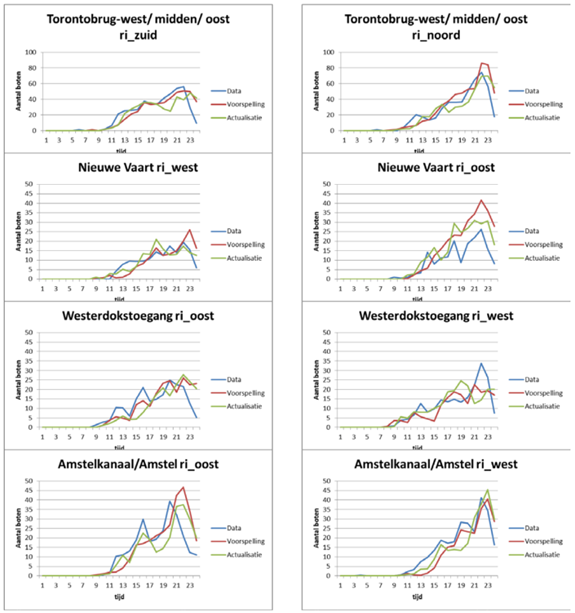

from urllib.request import urlopen
import json
import time
import os.path
# geojson_filename = "data/sewage_nodes.geojson"
# url = "https://api.data.amsterdam.nl/v1/leidingeninfrastructuur/waternet_rioolknopen/?page_size=1000"
# if os.path.exists(geojson_filename):
# print("Data has already been parsed to geojson. Please view '{}'".format(geojson_filename))
# exit()
# api_response = json.load(urlopen(url))
# data_entries = []
# max_count = 3
# count = 0
# while api_response is not None: # and count < max_count:
# time.sleep(0.5)
# data = api_response["_embedded"]["waternet_rioolknopen"]
# data_entries += data
# if "next" in api_response["_links"]: # has next page of results
# api_response = json.load(urlopen(api_response["_links"]["next"]["href"]))
# else: # is last page of results
# api_response = None
# count += 1
# # print(data)
# geojson = {
# "type": "FeatureCollection",
# "features": []
# }
# for entry in data_entries:
# # print(entry)
# feature = {
# "type": "Feature",
# "geometry": {
# "type": "Point",
# "coordinates": entry["geometrie"]["coordinates"]
# },
# "properties": {
# "id": entry["id"],
# "typeKnoop": entry["typeKnoop"]
# }
# }
# geojson["features"].append(feature)
# with open(geojson_filename, encoding='utf-8') as outfile:
# json.dump(geojson, outfile)Proposed route & time
We need to find a 5km route through the canals of Amsterdam and an appropriate time for the event.
Finding a route
We consider the following factors:
- Water quality: Less polluted waters are safer for swimmers.
- Canal traffic: We want to minimise impact on canal traffic. Canals with less traffic would also have better quality water.
(Swim) water quality
We have limited data available for water quality. However, we do know that Amsterdam uses a combined sewage system, so one of the major sources of water pollution is sewer overflows caused by heavy rainfall (Leemans, Supervisor, and Hofstra 2017). Thus, a possible precaution we can take is to avoid sewer overflow points
The Waternet sewerage network data is available on Overheid.nl. Unfortunately, the download link for the WFS data returned a 404 error. Instead, we used the provided API to retrieve the sewage nodes, then saved it as a GeoJSON file. (Coordinate Reference System used is EPSG:28992.) We then filtered the data to get the sewage overflow nodes.
Canal traffic
Our route should avoid areas of high canal traffic, to minimise impact on boats. This would also result in a route with cleaner water.
Waternet commissioned TNO to produce a model to predict traffic densities in the canal. (Snelder, Minderhoud, and Calvert 2013) The prediction results from the model are as follows:

Routes used by previous open water swim events
The Amsterdam City Swim is held every summer in the canals of Amsterdam. We have the routes for 2019 and 2023, both of which are the same, other than the direction.


Identifying potential routes
Based on the City Swims, Amsterdam Oost seems to be a suitable area for open water swimming events. Visual comparison also shows that Amsterdam Oost has relatively fewer sewage overflow points and less canal traffic.

Thus, we have identified 3 potential 5km routes in this area, indicated in the images below. Our recommendation is the third route, as it traverses the fewest number of sewage overflow points.


Determining the optimal time with least canal traffic
The canals used for the open water swim will need to be closed off for the event, but we want to minimise the impact on the canal boat routes. Thus, for the continuity of boat traffic, we look towards hosting the event outside of ‘rush hours’ on the canals.
As can be seen in the figure below (Snelder, Minderhoud, and Calvert 2013), the busiest hours on the water usually start around 15:00. For that reason the swimming event willshould be finished before 15:00.

Next, we need to determine the start time of the race. We know that
- People swim at speeds of about 8 km/h. (Thornton 2019)
- Required length of the swim route is 5km.
- For safety reasons, each wave of swimmers should have a maximum of 120 swimmers in the group. (Triathlon n.d.)
- We plan for around 3000 swimmers for the swim meet, similar to the Amsterdam City Swim. (Swim n.d.)
# Insert code for computations
# Original text:
# As people swim about 8 km/h, each round of 5 km would take approximately 40 minutes.
# With maximum 120 swimmers per group it would take 25 waves to accommodate all 3000 swimmers.
Thus, the first wave of the race starts at 7:00 am with a next wave going every 20 minutes, this way the last wave will be out of the water by 15:00.
Conclusion
The swim meet is proposed to be conducted from 07:00 to 15:00 pm, with the following route:
References
Leemans, Rik, WU Supervisor, and Nynke Hofstra. 2017. “WU Supervisor: Nynke Hofstra Deltares Supervisor: Bas van Der Zaan and Erwin Meijers Waternet Supervisor: Liesbeth Hersbach.”
Snelder, Maaike, Michiel Minderhoud, and Simeon Calvert. 2013. “Op de Amsterdamse Grachten, Hebben Wij Nu de Drukte in de Hand, Amsterdam ...” November.
Swim, Amsterdam City. n.d. “Swim Along.” Accessed October 14, 2023. https://www.amsterdamcityswim.nl/english.
Thornton, Jodi "Jato". 2019. “The Speed of Human Swimming.” LIVESTRONG.COM. https://www.livestrong.com/article/456880-the-speed-of-human-swimming/.
Triathlon, British. n.d. “Open Water Swimming Safety Guide for Multi-Sport Events.” British Triathlon. Accessed October 13, 2023. https://www.triathlonscotland.org/files/British-Triathlon-Open-Water-Swimming-Safety-Guidelines-08.pdf.